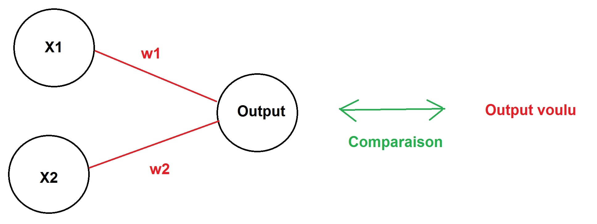

Toggle navigation
Home
Posts
Projects
Tags
Contact
science
My project
Voici un code simple (utilisable dans un R Script) représentant un réseau de neurons artificiels avec 2 entrées et 1 sortie sans couche cachée de neurones. 
#Reseau de neurone artificiels avec 2 entrees et une sortie #sans couche cachee. x1 <- 0 # entree 1 x2 <- 0 # entree 2 w1 <- 0 # poids de entree 1 vers sortie w2 <- 0 # poids de entree 2 vers sortie b <- 0 # bias (seuil a partir duquel le neurone donne une sortie) input <- 0 # input de neurone de sortie output <- 0 # output de neurone de sortie s <- 0 # input de neurone de sortie (somme des produits) fs <- 0 # output de neurone de sortie (fonction d'activation) E <- 0 # erreur de prediction tab_E <- 0 # tableau des erreurs de prediction tab_RUN <- 0 # tableau du nombre de fois que boucle realisee tab_s <- 0 # tableau des inputs du neurone de sortie tab_fs <- 0 # tableau des outputs du neurone de sortie w1_new <- 0 # nouveau poids 1 modifié selon l'erreur de prediction w2_new <- 0 # nouveau poids 2 modifié selon l'erreur de prediction w1_old <- 0 # ancien poids 1 w2_old <- 0 # ancien poids 2 eta <- 10 # facteur d'apprentissage (determine la vitesse et la precision d'apprentissage du reseau de neurones) x1_initial <- 0.1 # entree 1 (0<=x1<=1) x2_initial <- 0.3 # entree 2 (0<=x2<=1) w1_initial <- 0.5 # poids 1 initial w2_initial <- 0.2 # poids 2 initial b_initial <- 1.83 # bias initial (ne change pas au cours du temps) desired_output <- 0.4 # sortie desiree (peut signifier par exemple x1[0.1] + x2[0.3] = 0.4 ; note : il faudrait ajouter du code pour traduire les entrees et les sorties en nombres comprehensibles par les humains exemple 0.1=1; 0.3=3; 0.4=4 mais cela compliquerait ce somple exemple) predicted_output <- 0 # la sortie prevue par le reseau, cette sortie est comparee avec la sortie desiree pour determiner l'erreur de prediction i <- 0 # nombre qui sert à la boucle for d_E_d_fs <- 0 # derivee de E en fonction de fs d_predicted_d_s <- 0 # derivee de sortie predite en fonction de l'entree du neurone de sortie d_s_d_w1 <- 0 # derivee de somme des produits en fonction de poids 1 d_s_d_w2 <- 0 # derivee de somme des produits en fonction de poids 2 d_E_d_w1 <- 0 # derivee de Erreur de prediction en fonction de poids 1 d_E_d_w2 <- 0 # derivee de Erreur de prediction en fonction de poids 2 x1 <- x1_initial # affectation de valeur d'entree 1 à x1 x2 <- x2_initial # affectation de valeur d'entree 1 à x2 w1 <- w1_initial # affectation de poids initial 1 à poids 1 w2 <- w2_initial # affectation de poids initial 2 à poids 2 b <- b_initial # affectation de biais initial à biais (seul d'activation du neurone) for(i in (0:999)) # boucle la plus longue possible { cat("----------------------------------------------------------\n") cat("RUN",i + 1 ,"\n") # nombre de tours cat("desired_output =",desired_output,"\n") # affichage de la valeur de sortie voulue s = (x1 * w1) + (x2 * w2) # somme des produits, chaque entree est multipliee par le poids qui y est relie pour la ponderer tab_s[i+1] <- s # on enregistre s dans le tableau #cat("s = ",s,"\n") # retire car consomme inutilement espace fs = 1/(1 + exp(-s)) # fonction d'activation sigmoide pour transformer somme des produits en une valeure comprise entre 0 et 1 tab_fs[i+1] <- fs # on enregistre fs dans le tableau cat("predicted_output(fs) = ",fs,"\n") # affichage de la sortie predite predicted_output = fs # l'erreur redite correspond a fs (aurais pus utiliser la meme variable dans ce cas car pas de couche de neurone cachée) E = 0.5 * (desired_output - fs) * (desired_output - fs) # calcul de l'erreur de prediction en comparant la sortie prevue avec la sortie desiree cat("E = ",E," (ERROR : ",E * 100,"%)\n") # on affiche l'erreur, NOTE : erreur dans le calcul de % sans effet sur suite du deroulement d_E_d_fs = predicted_output - desired_output # calcul de derivee de E en fonction de fs #cat("d_E_d_fs = ",d_E_d_fs,"\n") # supprime car consomme espace inutilement d_predicted_d_s = (1/(1 + exp(-s))) * (1-(1/1 + exp(-s))) # derivee de sortie predite en fonction de somme des produits d_predicted_d_s = abs( d_predicted_d_s) # mise en valeur absolue de derivee de sortie predite en fonction de somme des produits #cat("d_predicted_d_s = ",d_predicted_d_s,"\n") # supprime car consomme espace inutilement d_s_d_w1 = x1 # calcul de derivee de somme des produits en fonction de poids 1 #cat("d_s_d_w1 = ",d_s_d_w1,"\n") # supprime car consomme espace inutilement d_s_d_w2 = x2 # calcul de derivee de somme des produits en fonction de poids 2 #cat("d_s_d_w2 = ",d_s_d_w2,"\n") # supprime car consomme espace inutilement d_E_d_w1 = d_E_d_fs * d_predicted_d_s * d_s_d_w1 # calcul de derivee de erreur de prediction en fonction de poids 1 #cat("d_E_d_w1 = ",d_E_d_w1,"\n") # supprime car consomme espace inutilement d_E_d_w2 = d_E_d_fs * d_predicted_d_s * d_s_d_w2 # calcul de derivee de erreur de prediction en fonction de poids 2 #cat("d_E_d_w2 = ",d_E_d_w2,"\n") # supprime car consomme espace inutilement if(w1_old == 0) # utilise une fois au premier tour { w1_old = w1_initial } w1_new = w1_old - (eta * d_E_d_w1) # calcul de la nouvelle valeur de poids 1 en fonction de l'incidence de celui-ci sur l'erreur de prediction w1 = w1_new # affectation du nouveau poids dans la variable poids 1 w1_old = w1 # affectation du nouveau poids dans la variable poids ancien 1 #cat("w1 = ",w1,"\n") if(w2_old == 0) # utilisé une fois au premier tour { w2_old = w2_initial } w2_new = w2_old - (eta * d_E_d_w2) # calcul de la nouvelle valeur de poids 2 en fonction de l'incidence de celui-ci sur l'erreur de prediction w2 = w2_new # affectation du nouveau poids dans la variable poids 1 w2_old = w2 # affectation du nouveau poids dans la variable poids ancien 2 #cat("w2 = ",w2,"\n") tab_E[i + 1] <- E # enregistrement de l'erreur de prediction dans le tableau tab_RUN[i+1] <- i # enregistrement du nombre d'interration de la boucle dans le tableau if(E<=0.000000000000009){break} # on stoppe la boucle lorsque l'erreur de prediction devient négligeable } tab_E # affichage du tableau des erreurs de prediction tab_RUN # affichage du tableau du nombre d'iterrations realisees tab_s # affichage du tableau de la somme des produits tab_fs # affichage du tableau du resultat de la fonction d'activation sigmoide plot(main = "NEURAL NETWORK ERROR DECREASE", tab_RUN, tab_E, type = "l") # realisation du graphique montrant la diminution d el'erreur de prediction en fonction du nombre d'iterrations de la boucle
×
Cite